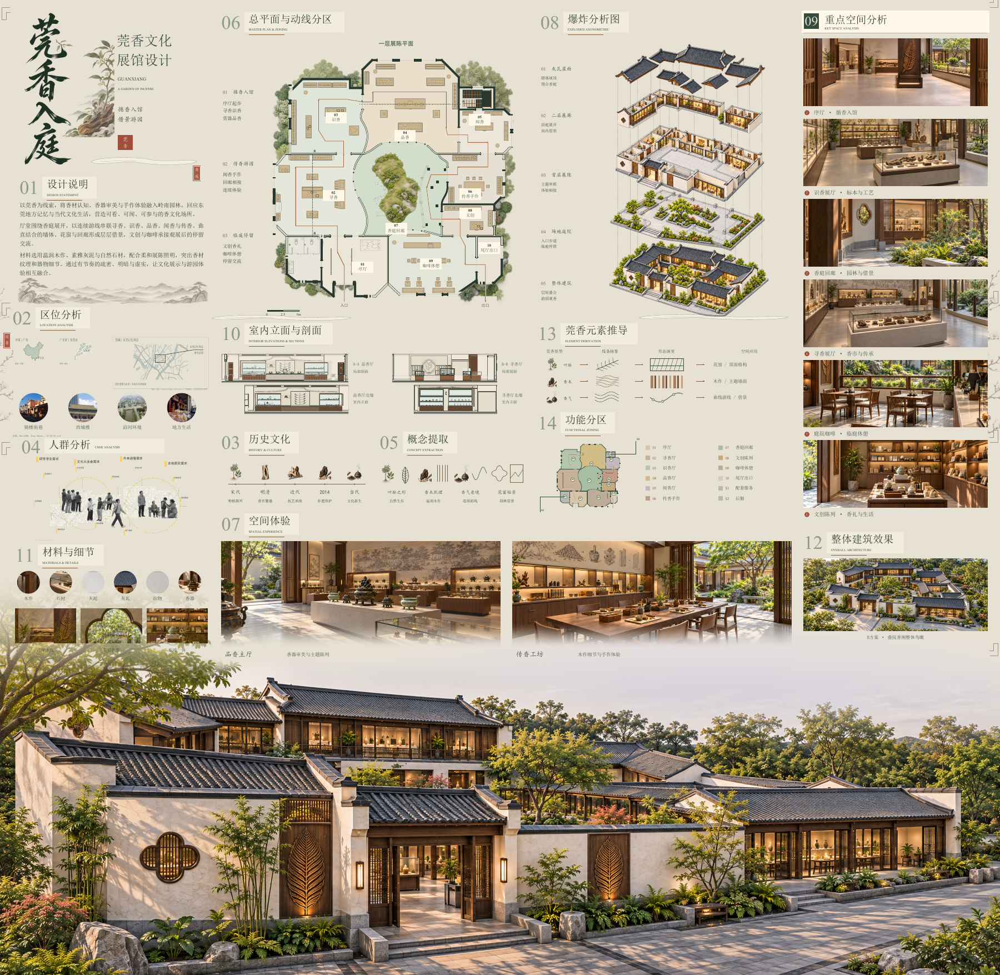
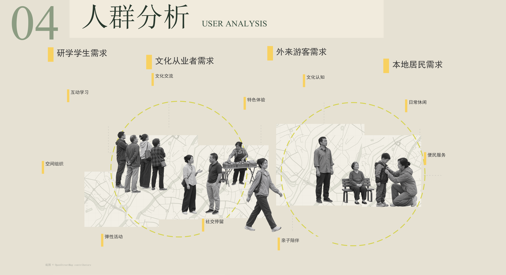

莞香入庭 · 素材与展板审核
毕设展板审核 · r103
莞香入庭，
循香入庭。
已去掉04人群分析的说明小字，保留四类人群标题、行为短标题及原人物地图构图。
宽158 × 高154厘米 · RGB sRGB
有效300ppi · 字体嵌入 · 无出血
RGB sRGB，页面即成品尺寸，无额外出血。300ppi为输出密度；原图包含AI生成及增强素材。
04人群分析 · 去说明小字
保留四类标题、十个行为短标题与拼贴构图。下方可查看局部或下载独立素材。

当前展板与项目成果
点击查看完整原图。